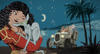
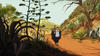
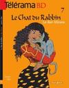
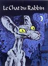

Actualités
Nouvelle image du film le chat du rabbin
Le site cinemateaser.com publie un article sur le film le chat du rabbin avec des images diffusées lors de l'American Film Market.
Joann Sfar s'explique sur les intégrales du Chat du Rabbin
Sur son blog, Joann Sfar explique pourquoi un album regroupant les 5 tomes du chat du rabbin s'apprête à sortir alors qu'il existait déjà une intégrale des 3 premiers tomes.
Planche du chat du rabbin exposée au musée de la BD
Une planche originale de l'album le Malka des Lions est exposée au musée de la bande dessinée jusqu'au 2 janvier.
Couverture de l'intégrale du Chat du Rabbin

Voici la couverture de l'intégrale du Chat du Rabbin qui sortira le 26 novembre.
Vidéo 1livre 1 jour sur le Chat du Rabbin
Voici une vidéo de l'émission 1 livre 1 jour diffusé 20/01/2003 où Olivier Barrot reçoit Joann Sfar à l'occasion de la sortie de ses bandes dessinées "Le chat du Rabbin", volume 1 et 2.
Joann Sfar confirme la 3D pour le film le Chat du Rabbin
Dans deux interviews donné à Femme actuelle et Métro, Joann Sfar confirme que le film le Chat du Rabbin sera réalisé en 3D.
Il précise que cela devrait "ressembler un peu aux images stéréoscopiques de quand on était enfants avec un côté très théâtral".
Le film le Chat du Rabbin en 3D
Le site d'UGC distribution annonce désormais que le film le Chat du Rabbin sera une animation 3D.
Nouveau report pour le film le chat du rabbin
La sortie du film le chat du rabbin est désormais annoncée pour le 30 mars 2011 sur le site d'UGC distributions.
Édition Télérama de la Bar-Mitsva
Voici la couverture de l'édition de la Bar-Mitsva qui sera disponible avec le Télérama du 13 juillet.
Un coffret contenant plusieurs albums de la collection Pilôte dont la Bar-Mitsva du Chat du Rabbin est également disponible à la vente sur le site de Télérama.
Intégrale le chat du Rabbin
À l'occasion de la sortie du film le chat du rabbin (prévue pour le 3 novembre 2010), Dargaud publiera l'intégrale des 5 albums du chat du rabbin.
< Actualités précédentes Page 4 sur 6 Actualités suivantes >